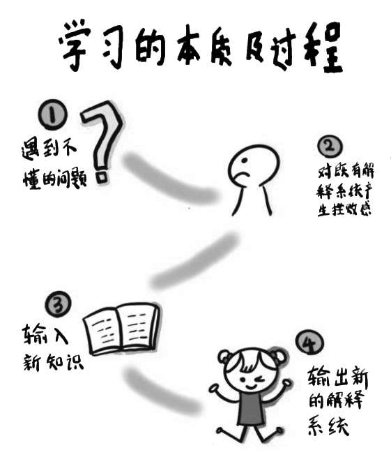

“与其有乍交之欢，不如无久处之厌”，这是交友的要诀，也是学习的原则。但遗憾的是，互联网时代的人好像都得了一种“错失恐惧症”，唯恐自己错过了新的信息、新的知识，于是经常一刻不停地追逐未知信息并囤积起来以备不时之需。想想收藏夹里的上千条深度好文、书架上一摞摞蒙灰的书籍、Kindle阅读器里成千上万的电子讲义……这些让我们乍见甚欢、快速浏览、立即收藏、事后将其忘得一干二净的信息，不过是被我们用另一种方式“埋葬”了而已。
当海量信息的即时获取成为常态，我们最稀缺的是对自己进行一次审视：真正的学习到底是什么？我们平时见到新鲜信息就收藏的行为，是不是一种伪学习？
在回答这个问题之前，我想介绍一位传奇般的人物——安德烈·焦尔当。安德烈小时候曾经是一个人人都瞧不起的差生，但他后来通过个人努力拿下了生物学和教育科学的双料博士学位，最终成为国际上著名的生物学家和科学认识论研究专家。儿时的学习经历让安德烈认识到，传统的学校教育体系其实存在着很大的缺陷，它既没有达到让学生学会学习的目标，也没有达到提高学生能力的初衷。后来，结合自己多年的教学和研究经验，他写出了一部对后世教育界产生了深远影响的著作——《学习的本质》。
在这本书中，安德烈·焦尔当为学习下了这样一个定义：“所谓学习，就是改变我们自己的‘先有概念’，也就是从一个既有的解释系统，过渡到另外一个更加合理的解释系统，从而能够帮助我们处理眼下面临的情况。”
从后往前追溯这个定义，我们会发现，学习其实包含了这样一个完整的过程：
首先，我们在当下遇到了一个情况，这个情况最大的特点是让我们发蒙——我们不知道怎么解释，也不知道怎么去应对和解决，这个新情况给我们原来的解释系统带来了一个挑战。
然后，当我们用过去的知识无法解释和解决这个挑战的时候，就会产生一些挫败感，因为我们发现自己原来的解释系统出现了缺陷和漏洞，而且这个漏洞特别明显，必须补上。
接着，为了消除这种挫败感，我们会主动选择搜集和输入更多的信息，也就是输入新知识。
最后，怎么解决面临的问题呢？我们会对新知识进行加工和应用，打破自己原来的解释系统，构建新的解释系统。

对照安德烈·焦尔当对学习做出的解释，我们会发现，真正的学习是一个完整的闭环：它起源于我们遇到了一个让自己困惑的问题，推动我们因深感挫败而到处寻找新的知识，最后又落脚于使用新的知识去解决我们一开始遇到的问题。
也正是这样一个完整的闭环，向我们解释了为什么所谓的收藏行为并不能算作真正的学习。因为收藏这个动作使我们避开了学习中的两个重要环节：
第一，沉迷于收藏的学习行为会让大部分人都无法经历挫败感。挫败感是学习中很重要的一个环节，没有挫败感，我们就不会主动在学习中建构一个新的解释系统。
而我们平时收藏的内容，不过是一种知识的被动囤积。我们很少因为遇到了一个无法解决的问题，而去有针对性地输入和收藏信息。大部分人往往是在网上无意中浏览到一些信息后，觉得以后可能会有用，唯恐自己会丢失它，于是随手将其收藏起来。轻易得到的东西我们反而不会珍惜，人类的本性就是如此。过不了多久，这些收藏夹里的东西就会被我们忘得一干二净。
以我个人为例，微信刚上线那段时间，信息一下子蜂拥而至，我拿着手机躺在床上浏览相关链接和朋友圈时，也会时不时地发现一些新鲜的东西，比如觉得这篇文章写得不错，那个干货也挺值得学习，这时候我自然就会产生一种要把这些文章放到收藏夹里或者转发到朋友圈的欲望。但是，在没看到这些信息之前，我根本就不知道文章中所涉及的问题是什么，有可能根本用不着这些信息，我的心态其实只是一种“随便逛逛，看到好东西就想占为己有”的旅游心态。从浏览信息到收藏保存，我自始至终获得的都是一种临时的快感和虚幻的安全感。在整个学习过程中，我从没有产生过“遇到问题无法解决”的挫败感。我没有在做一件事，也没有在解决一个问题，我只是觉得新鲜而已。我把这种东张西望，以及在东张西望中获得的新鲜感当成了学习。我以为收藏就是一种学习，其实，从收藏下来那一刻开始，我就将这些信息埋葬在了一个永远不会被记起来的角落。
按照这种“旅游心态”学习了一段时间后，我的手机里收藏了几千条所谓的“干货知识”，收藏夹变得满满当当。但是，如果此时让我回头清理手机，我往往无法回忆起自己究竟是什么时候、出于什么动机收藏了如此多的内容。这些信息虽然躺在了我的手机里，但跟我并没有产生任何关系。
之后，我对这个阶段的这种行为进行了深刻的反思，也明白了为什么收藏行为并不能算作真正学习的第一个原因——收藏会让我们一直停留在舒适区，无法感受到挫败感。而只有感受到了挫败感，我们才会发现自己现有的知识体系存在哪些漏洞，才会有目的地寻找自己真正需要的信息，而不是如此笼统、被动地看到什么就收藏什么。
第二，沉迷于收藏的学习行为，往往只有输入，没有输出。为什么有时我们经历过挫败感并抱着解决问题的目的收藏了自己需要的信息后，依然没有多大的进步呢？答案很可能是因为我们只做到了输入和存储知识，但是没有对知识进行生产和输出。
让我们再回忆下学习的本质：首先，我们遇到一个无法解决的新问题；然后，我们产生挫败感；接着，我们开始输入各种新知识；最后，我们会对新知识进行整合消化，输出一个新的解释系统。这4个环节缺一不可，尤其是最后一个输出过程，它是对这些信息加以处理，与你原有的知识体系、经验体验联结起来，完成深度学习的重要步骤。但是，很多人的学习行为往往就止步在前三个环节，忘记了对新知识进行输出。只有输入却没有输出，就像搬来了大量砖头，但只是杂乱地堆在一起——这些砖头若没有经过规则地堆砌，就无法成为房屋建筑。
著名学者吴伯凡曾经讲过一个亚特兰大UPS分拣中心的例子，可以帮助我们形象地理解输入和输出的关系。
亚特兰大UPS分拣中心是美国第二大地面包裹处理中心，每小时能够分拣10万件包裹，它的出现极大地提升了美国的物流网络运营能力。作为UPS的全球总部，亚特兰大分拣中心在每天凌晨两三点钟的时候，都会迎来大量的飞机，以及这些飞机带来的数不清的包裹。如此多的包裹，如何才能实现高效分拣呢？让我们看看分拣中心的处理模式：飞机到达时，所有的包裹都是杂乱无章的，需要寄送到哪个地方的都有。这些包裹被一股脑儿地从机舱往分拣流水线上倒下去，传送带上全是各种各样的包裹。但接下来事情就发生了变化，主传送带的两边出现了很多岔口，相当于支线——包裹走到某个岔口，就会被推到一个支线上，然后继续被推到下一级的分支传送带上。就这样，通过一级一级的分拣和传送，所有包裹最后都会各就各位，传递到收件人手中。
亚特兰大UPS分拣中心在开始阶段是简单粗暴的——所有包裹没有差别地被倒在传送带上。但在传送过程中，每个包裹上的地址信息都会被分类编码，进行信息适配，一级一级往下分发。如果没有人对这些包裹进行分类和分发，那么它们最后就会被堆在仓库里，被人遗忘。
学习中的输入和输出过程其实跟包裹到达和分拣的过程很相似：知识海洋中各种各样的信息就像是机舱里杂乱无章的包裹，当它们被大量输入的时候，如果我们的大脑没有对其进行分类编码，没有将其和原有的知识体系联结起来，没有将其放在我们新解释系统的相应位置上，那么这些信息就会像一堆没人分拣的包裹一样被人遗忘。
我们的大脑只能记住那些经过编码并完成了整个递送的知识。所以，从这个意义上讲，如果我们只沉迷于收藏而缺乏输出，那么在本质上，我们并没有完成真正的学习，反而陷入了知识堆积的伪学习困境。
搞清楚了伪学习的两种原因，我们就可以着手改变自己囤积知识的习惯。从心理学角度说，觉察就是改变的开始，想要摆脱伪学习的困境，则需要我们自行判断自己的行为是不是伪学习。如果是，我们就要有意识地对知识囤积说“不”。这种觉察意识，就是我们一直在强调的“学习辨识力”。
那么，我们应该怎样培养自己的学习辨识力呢？下面3个小妙招非常有效，你可以分别试一试。
第一个方法是让自己像程序员一样有的放矢。对于绝大多数人来说，编写计算机程序都是一个专业领域，那些整天对着电脑敲键盘的程序员更是让人觉得高深莫测。我当前正在从事IT信息行业，仔细观察后我发现，虽然并不是每个人都会编写程序，但是程序员有的放矢的工作方法却是每一个人都可以掌握的。
如果你对“码农”稍有了解，就会发现他们的工作状态有其独特之处：他们所有的工作重心和目标都是为了“解决问题”——本着这个目的，程序员很少会有“旅游心态”，他们大多数时候都会集中所有精力去修复程序中的某一个漏洞，这个漏洞修复好了，再集中精力开始解决下一个问题。
基于这种工作性质，程序员无论做什么都会特别专注，他们工作起来心无旁骛，学习目标也非常明确。如果你观察过大部分程序员桌上摆的书，就会发现它们基本都是编程领域的技能书，他们能够做到一切工作都围绕着自己的工作目标，一切工作都围绕着自己当下要解决的问题。所以，我们在学习的时候，也要经常提醒自己学习程序员这种宁缺毋滥、有的放矢的状态。
第二个方法是让自己像医生一样学会过滤信息。生活在这个信息爆炸的时代，我们难免会遇到各种无关的信息干扰，那么我们应该如何从这些杂乱无章的信息中筛选出自己真正需要的呢？这个时候，我们可以借鉴一下医生问诊的小诀窍。医生问诊的时候，需要从病人诉说的一大堆有用及没用的信息中迅速筛选出真正对诊断疾病有用的信息。这个过程中有两个原则特别有效，我们都可以借鉴。
原则1：关键词原则。对于医生来说，这个关键词就是病人哪里不舒服，医生往往会围绕这些关键信息不停地追问。放到学习上，我们也可以围绕自己要解决的问题列出几个关键词，只要我们接触到的信息与列出的关键词没有关系，那么不管这些信息看起来多么有用也要一律过滤掉。
原则2：同类内容中重点关注那些差异大的信息。我不知道你是否有过这种经历，看病时你如果不小心说出了自相矛盾的病情，医生就会立即抓住这一点反复追问确认。这是因为有经验的医生都知道，同一个疾病如果在不同时段有很不一样的表现，那么这里面就可能蕴含了大问题。学习上也是一样，对于同质化严重的信息，我们不需要保存太多，在同一个学习目标下，相互之间差异越大的知识，越值得保留。
这两个原则可以帮助我们了解哪些信息是没用的，然后在有用的信息中进一步淘汰同质化严重的冗余信息。
第三个方法是让自己像交警一样快速输出。前面我们已经讲过，要想摆脱“伪学习”，就要对输入的信息进行加工和输出。在输出这个环节，做得最好的其实是交警。比如，如果交警发现有违章停车，他会不会等着车主回来呢？肯定不会，他会马上开出罚单贴到车上去。我们在学习时也应该像交警这样，第一时间就对新学到的信息进行加工和输出。
那么，多长时间算快速输出呢？我认为不能超过72个小时。这个“72小时原则”是我在《小狗钱钱》这本书里学到的。它是一本教小孩子理财的童话故事，但是其中很多道理也值得成年人学习和借鉴。比如，作者博多·舍费尔在书中指出：“当你下定决心要做一件事情的时候，最好是在72小时内快速完成它，否则你很可能因为拖拖拉拉，致使完成这件事的概率趋近于0。”为了避免这种情况发生，我一般要求自己只要看到有用的信息，就一定要在72小时之内对它进行充分消化，用我个人理解后的内容重新对它进行输出和加工。利用这个原则，我们可以时刻督促自己有效输出，完成学习的闭环。